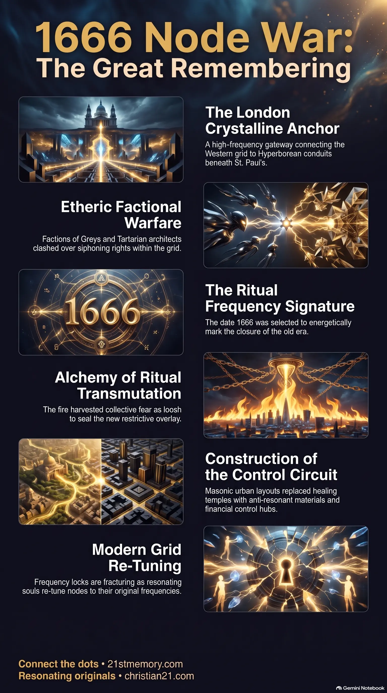

Shattering the 1666 Lock
Shattering the 1666 Lock — how the Great Fire of London covered the sealing of London’s primary energy node.
The Great Fire of London was the 3D cover for an etheric war over London’s Tartarian crystal node, sealing the last reset cycle.
Test your understanding of 1666 Node War — the etheric war behind the Great Fire of London, the Tartarian crystal node, and the last reset cycle.

Shattering the 1666 Lock — how the Great Fire of London covered the sealing of London’s primary energy node.

The etheric war for London's crystal grid — Tartarians, Greys, Anuk, and Custodians clashing over the St. Paul’s crystalline anchor.
The 1666 Node War represents a pivotal military conflict in the timeline of Historic Resets, serving as the energetic catalyst for the final dismantling of the visible Tartarian Empire in the public timeline. While the official human record attributes the destruction of London in September 1666 to the Great Fire of London—supposedly originating in Thomas Farriner’s bakery on Pudding Lane—this physical catastrophe was merely a surface cover story. Beneath the surface of this manufactured narrative lay an intense, multi-dimensional etheric war fought in the higher overlays. Factions of the Greys, who were flesh-tech hybrids operating under prior co-management agreements, had infiltrated the primary energy node of the European grid located directly beneath London. The original architects of this network, the Tartarians, attempted to defend and reclaim the node, launching a violent clash that threatened to tear open the holographic simulation. To prevent a visible collapse, the Custodians and Anuk intervened, enforcing a truce and sealing the node under a new frequency lock. The resulting physical inferno served both as a tactical screen and an alchemical ritual of transmutation, harvesting the collective fear and trauma as loosh to secure the new, restrictive overlay.
The 1666 Node War exposes the deep mechanics of the holographic prison system and how history is manufactured to suppress human consciousness.
At the heart of the conflict was London's multi-layered crystal anchor, positioned directly beneath the city and aligned with St. Paul's Cathedral. This anchor was a core fractal energy lattice built during the first seeding of the realm from Sirius A and Sirius B. It held tremendous strategic value because it served as a primary gateway connecting Western Europe's grid directly to the Northern Atlantic conduits, which ultimately routed to the Arctic and Hyperborean points. This node acted as an antenna for high-frequency source energy, making it a prime target for energetic hijacking.
By the mid-1500s, Greys factions had infiltrated the London overlay. They began executing hybrid experiments and siphoning massive currents from the crystalline grid, converting the free-flowing energy for their own purposes. The original Tartarian architects of the region recognized this infiltration and actively fought to block the siphoning and reclaim the node. This led to a violent, invisible war in the higher frequency overlays directly above the unsuspecting citizens of London.
As the battle intensified into 1666, the conflict threatened the stability of the entire dome. The Custodians, who were supposedly neutral keepers of the reincarnation loop, had covertly aligned with the Greys due to prior agreements. Conversely, the Anuk system engineers viewed the Greys' erratic siphoning as a threat to the stability of the entire grid and sought to purge them. This internal struggle escalated to a point where plasma flares and electromagnetic friction were becoming visible in the sky, threatening to expose the holographic nature of the dome. To prevent a total collapse of the public narrative, a Higher Council mandate intervened, forcing an immediate truce between the Anuk and Custodian factions.
The execution of the 1666 reset was carried out through five distinct tactical phases:
The 1666 Node War was not an isolated event but the opening salvo of the final dismantling of the Tartarian Empire. The crystal anchor beneath London did not operate in a vacuum; it was geometrically linked to identical seed anchors beneath other major capital cities, including Paris, Rome, Washington D.C., and Moscow. These capitals functioned like interconnected chips on a massive, global circuit board.
By sealing the London node and routing its energy through the crown's financial system, the parasitic alliance successfully severed Western Europe's connection to the primary conduits of the Northern Atlantic and Hyperborea. This energetic disconnect laid the groundwork for imposing subsequent industrial and colonial expansion overlays, which were specifically designed to distract humanity with material survival and prevent them from accessing original grid memory. Furthermore, this reset is deeply intertwined with the manipulation of water and ocean currents, which the parasites use as conductors to suppress the natural resonance of coastal nodes.
The strategic consequences of the 1666 Node War are still felt today, as the event established the baseline for modern psychological and energetic control.
By destroying Tartarian structures and rebuilding with anti-resonant masonic materials, the parasites successfully turned active healing temples into dead monuments, cutting humanity off from free-energy grid access.
The 1666 Node War proved the effectiveness of using engineered catastrophes to mask grid-warfare operations. This template of using physical disasters to harvest loosh and impose new, more restrictive laws was later mirrored in subsequent historic resets, such as the Titanic sinking.
Ley lines that once carried pure, high-vibrational source energy were systematically inverted into parasitic circuit boards backed by the manipulated consciousness of the population.
In the current era, the amnesia system is breaking down, and the frequency locks established during the 1666 reset are fracturing. Resonating souls acting as anchors are automatically re-tuning these nodes back to their original frequencies. This collective re-tuning is dissolving the parasitic overlays, paving the way for the original crystalline realm to phase back into perception.
This topic is free to share. Support the archive →